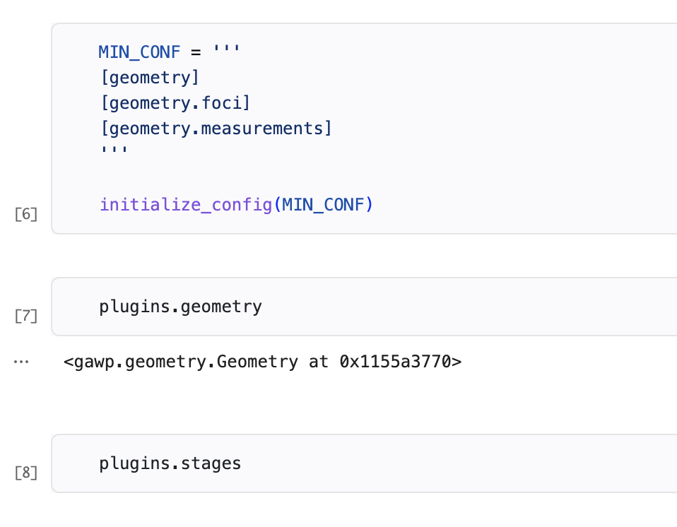
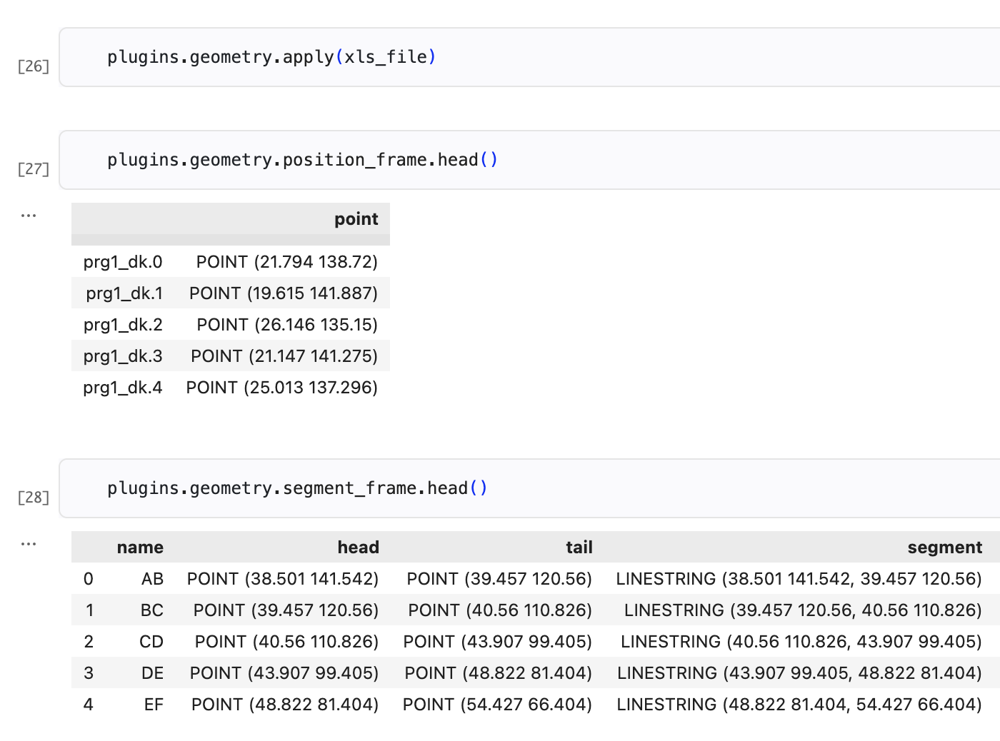

Using Plugins in An Application
When the initialize_config function creates the plugins requested in a configuration file it registers them with a module called the plugin manager.
Applications use the manager to figure out which plugins are installed, to run the plugins, and to access their outputs when they have finished.
The module is named plugins.
To use it, import it into your application:
from gawp.plugin import plugins
Accessing Plugins
After the module is imported you can refer to the plugins by name, e.g. plugins.geometry or plugins.stages.
These names are all defined when GAWP is first imported, but they are all set to None.
After you call initialize_config the names are updated and will be references to the objects that implement the stage.
In this example, a notebook defines a workflow that only has the three geometry plugins, so plugins.stages is still None
after the setup.

Running Plugins
To execute the part of the workflow defined by a plugin call one or more methods defined in the plugin's module.
For example, the Geometry plugin has a method named apply.
It reads the positions of the foci and (if Measurements is installed) the positions of the measurement points, saving them in data frames that can be accessed later.

The sections below have a brief overview of the plugins and methods that are most likely to be used in a Jupyter notebook. For more details see the complete documentation at Plugin Manager.
Geometry
plugins.geometry.apply(xls_file)-
Read the positions of foci and (if configured) measurments from an open XLS file.
Saves the results in
plugins.geometry.position_frameandplugins.geometry.measurement_frame. plugins.geometry.linearize()-
Execute the linearization algorithm. Returns a Pandas DataFrame, indexd by data point ID, containing the name of the closest line segment and coordinates of the where a line from the point intersects the segment.
The data frame is also saved as
plugins.geometry.linearized_frame.
Join
plugins.join.apply(xls_file)-
Create a Pandas DataFrame that has one column of output for each sheet specified in the configuration file.
The data frame is also saved as
plugins.join.combined_frame.
Group
plugins.group.apply(xls_file)-
Create a Pandas DataFrame that has one column of output for each sheet specified in the configuration file.
The data frame is also saved as
plugins.join.grouped_frame.
Stages
plugins.stages.apply(fn, df)-
The arguments are the name
fnof the spreadsheetfnand a framedfthat is indexed by data point ID and has the name of the line segment closest to the point. Look up the stage breaks for the file and create a Pandas DataFrame that has the meiotic stage for each point.The result is also saved as
plugins.stages.stage_frame
Note: The names of segments are in the frame created by the Geometry plugin, in a
column named seg_name. This is how the main loop in the command line application
calls stages.apply:
plugins.stages.apply(fn, plugins.geometry.linearized_frame[['seg_name']])